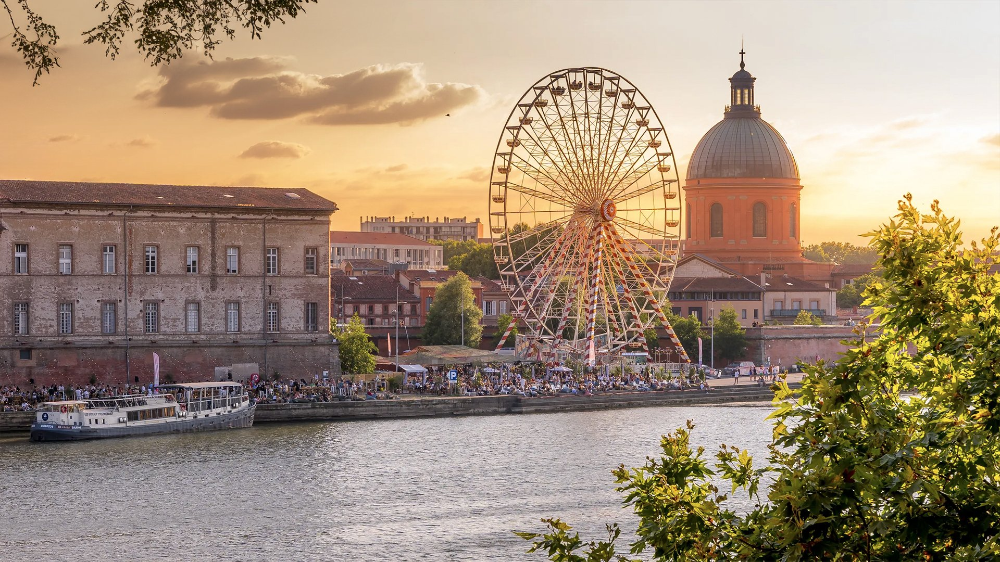
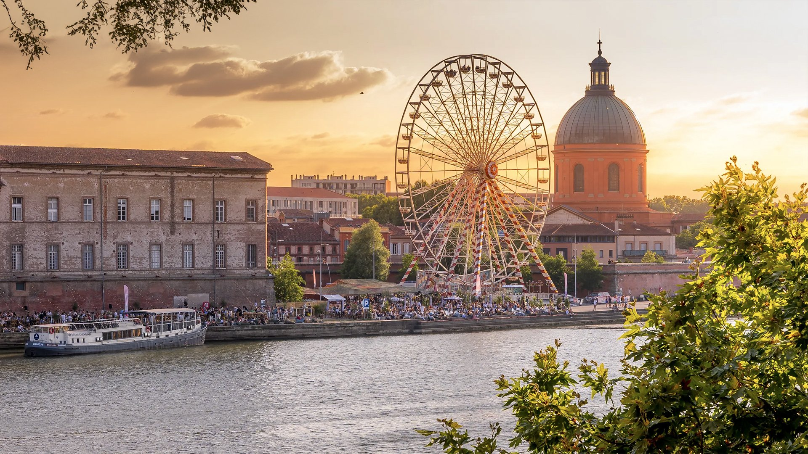

Authors of selected papers from ISORC 2025 will be invited to submit an extended version of their work for the Special Issue on AI-Driven Real-Time Distributed Computing for the Edge-Cloud Continuum review and possible publication in the Elsevier Journal of Systems Architecture: Embedded Software Design (JSA).
|
DISSERTATION DIGEST IMPORTANT DATES
|
|
| Submission deadline | March 09, 2025 |
| Acceptance notification | March 15, 2025 |
| Camera-ready papers | March 20, 2025 |
| Early registration: March 16, 2025 | March 16, 2025 |
The Doctoral Symposium is a concentrated half-day event that will be held during IEEE ISORC 2025, which will be held May 26-28, 2025, in Toulouse, France. In it, Ph.D. students present their ongoing research interests/plans/results to a panel of researchers in the field and receive specific constructive feedback, including opportunities to meet with mentors one-to-one. We encourage students to present reproducible and replicated research and to promote new and open-source implementations in order to ensure that the original research is reproducible. Details of the implementation of a replicated research study should be made publicly available, along with comments, explanations, datasets, and tests. Applicants will be divided into two groups:
- Early-stage research: students at an early stage of their thesis who are focused on crafting their research proposal and completing background research.
- Late-stage research: students that are closer to finishing their thesis or dissertation and thinking about how to present their research, its results, and its impact.
Accepted papers with a maximum of six pages will be published in the IEEE ISORC 2025 conference proceedings and included in the online IEEE Xplore digital library.
Ideal candidates will be in the early or mid-stages of their Ph.D. and should have a solid idea of their direction and topic, but they should also have room for improvement. Suitable content and topics fall into the exact same range as for the main symposium's list of topics.
All papers should be submitted in PDF format, and their title must bear a "DOCTORAL SYMPOSIUM"
prefix which will be removed in the camera-ready version.
To apply to the doctoral symposium, please submit your paper, following the guidelines of one of the two
pape,r formats given below, through HOTCRP.
PAPER FORMATTING INSTRUCTIONS
Prepare the DOCTORAL SYMPOSIUM paper with a maximum length of 6 pages (including all references, figures, and
tables);
only papers written in English are accepted; follow the IEEE double-column format using the published IEEE
Conference
Proceeding templates, available at IEEE Templates.
Papers can be:
- Position paper: Position papers must clearly motivate, discuss, and summarize the proposed Ph.D. research, describe how the research fits into and advances research in related fields, and report on your progress. You may additionally focus on a more specific area of the research if desired. In the concluding section, you should identify 2 questions/areas for improvement that you would like to discuss during the session.
- Reproducible and replication of research papers: Papers of this type should present a replication of already published research work in network and service management to confront the new implementation and results with those of the original research and to allow that reproducible research to be made publicly available together with comments, explanations, datasets, and tests. We encourage students to publicly share their findings on platforms such as GitHub.
- Submission deadline: March 09, 2025) (anywhere on earth)
- Acceptance notification: March 15, 2025 (anywhere on earth)
- Camera-ready Submission: March 20, 2025 (anywhere on earth)
- Conference date: May 26-28, 2025
If you have questions or encounter any problems, please notify the DOCTORAL SYMPOSIUM chairs:
- Slim Abdellatif, INSA Toulouse, France
We acknowledge support from the following.
 Pending Pending |
 |
 |
 |
 |